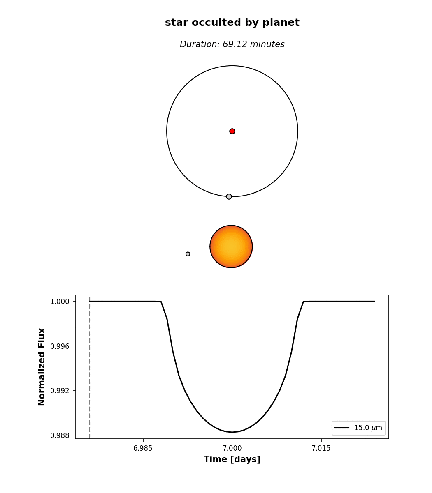
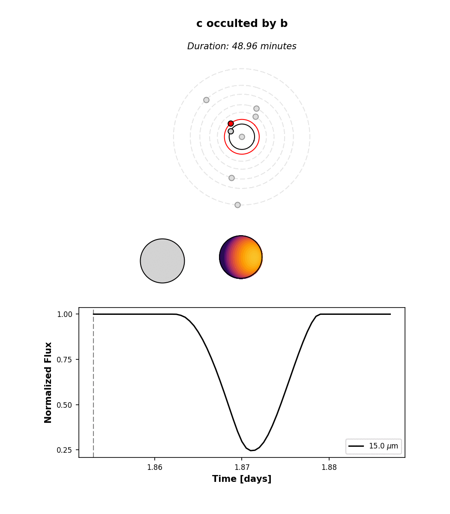

Tutorial¶
In this section I’ll go over some of the planetplanet basics, like instantiating
a planetary system, computing orbits and light curves, and doing some simple plotting. Users are
encouraged to also check out the scripts page for a collection of examples,
including several of the scripts used to plot the figures in the paper. Those scripts cover most
of the functionality of planetplanet.
Instantiating a planetary system¶
After installing, you can easily import planetplanet in Python:
>>> import planetplanet as pp
The simplest thing you can do is to instantiate a one-planet system and compute some transit and secondary eclipse light curves:
>>> star = pp.Star('star', m = 0.1, r = 0.1)
>>> planet = pp.Planet('planet', m = 1., r = 1., per = 3., inc = 89.5, t0 = 4.)
Here we’ve instantiated a star with mass 0.1 \(\mathrm{M_\odot}\) and radius 0.1 \(\mathrm{R_\odot}\)
– corresponding to an M7 (ish) dwarf. We’ve also given it the name “star”, which we will use to access
it later. We instantiated the planet with mass 1 \(\mathrm{M_\oplus}\), radius 1 \(\mathrm{R_\oplus}\) –
i.e., an Earth-size planet. We gave it an inclination of 89.5 degrees and specified that the time of transit t0
is at \(t = 4\). Note that by default, Star parameters
are specified in Solar units, while Planet parameters are specified
in Earth units. Check out the Star and Planet
classes for a description of all the available keywords and their default settings.
Next, we instantiate a System object, which is the main gateway to the C
photodynamical routines:
>>> system = pp.System(star, planet, distance = 10)
We’re telling planetplanet that this planetary system is composed of a star and a planet, and that it’s at a distance
of 10 parsecs. Note that the Star instance must always come first; currently, only
one Star is allowed per system, as planetplanet can’t yet handle binary
systems (but stay tuned!). Check out the System class for a list of all available parameters.
Computing orbits and light curves¶
Now let’s compute the light curve over the span of ten days, at a cadence of 1.44 minutes:
>>> import numpy as np
>>> time = np.arange(0, 10, 0.001)
>>> system.compute(time)
Computing orbits with the Kepler solver...
[==================================================] 100% 1ms
Computing occultation light curves...
Done!
Several things just happened. First, planetplanet computed the orbital solution for the system over the given
time array using a Keplerian solver and stored the planet’s Cartesian coordinates in the x, y, and
z attributes:
>>> planet.x
array([-383.81118951, -384.2744517 , -384.73602829, ...,
-2.78460764, -1.85641188, -0.92820798])
>>> planet.y
array([ 1.93374349, 1.92672441, 1.91969687, ...,
-3.86741063, -3.86745305, -3.86747849])
>>> planet.z
array([ 221.58505598, 220.78074891, 219.97547339, ...,
-443.16136416, -443.16622404, -443.16913998])
Warning
planetplanet uses a left-handed Cartesian coordinate system. This is somewhat unconventional, but it is convenient in that the x axis points to the right on the sky, the y axis points up, and the z axis points into the sky. The observer is thus always at z = \(-\infty\). Prograde orbits proceed counter-clockwise when looking down the y axis. In practice this choice doesn’t matter, since the absolute sense of the orbit (and whether a planet is to the left or to the right of the star) cannot usually be established from photometry.
We can view the orbit by running
>>> system.plot_orbits()
The code also computed light curves for all occultation events. These are stored in the flux
attributes of each of the bodies and in the System instance:
>>> system.flux
array([[ 9.01190198e-15, 8.68430010e-15, 8.36835988e-15, ...]])
>>> star.flux
array([[ 9.01190198e-15, 8.68430010e-15, 8.36835988e-15, ...]])
>>> planet.flux
array([[ 0., 0., 0., ...]])
The system.flux attribute is the sum of the light curves of all bodies in the system. Note
that flux is a two-dimensional array:
>>> system.flux.shape
(10000, 112)
The first axis is the time axis (we computed stuff over 10,000 cadences); the second axis is the
wavelength axis. Though we didn’t specify it, planetplanet computed the light curve
for the system over a grid of wavelengths:
>>> pl.plot(system.wavelength, system.flux[0, :])
What we see is the Rayleigh-Jeans tail of the stellar flux. If we poke around in the docs, we see that
the default effective temperature for a Star instance is 5577 K,
so this is the Sun’s blackbody spectrum. By default, planetplanet computes light curves in the range
5 - 15 \(\mu\mathrm{m}\) at a resolution R = 100. We can change these values when we call compute():
>>> system.compute(time, lambda1 = 0.1, lambda2 = 15, R = 1000)
>>> pl.plot(system.wavelength, system.flux[0, :])
>>> pl.xscale('log')
Now let’s look at the system light curve at a given wavelength over the entire time array:
>>> system.plot_lightcurve(wavelength = 15)

Three transits and three secondary eclipses are clearly visible. Clicking on one of the events brings up an interactive window. This is what you get when you click on a transit:
{kind=link}
At the top, we see the orbital configuration at the time of transit (observer toward the
bottom); in the middle, we see an animation of the event; and at the bottom, the event
light curve. Note that the image of the star reflects the limb darkening parameters planetplanet assumed,
u1 = 1 and u2 = 0 (see Star). By default,
limb darkening coefficients can be specified up to any order as a Taylor expansion in the
quantity \((1 - \mu) = (1 - \cos\phi)\), where \(\phi\) is the viewing angle:
Different limb darkening parameters can be specified when instantiating a
Star object via the limbdark
keyword. Note that planetplanet also allows users to specify wavelength-dependent limb
darkening coefficients. See this script for an example.
Computing phase curves¶
We can also plot the phase curve for the planet in the examples above, but we would have needed to specify phasecurve = True when instantiating it. Alternatively, we can just set the attribute directly:
>>> planet.phasecurve = True
>>> system.compute(time, lambda1 = 0.1, lambda2 = 15, R = 1000)
>>> system.plot_lightcurve(wavelength = 10)
By default, planets are instantiated with the RadiativeEquilibriumMap
surface map with an albedo of 0.3 and a nightside temperature
tnight of 40 K. The latter two can be passed as keywords to the
Planet class or specified directly by setting the respective attributes. The
RadiativeEquilibriumMap surface map computes radiances assuming
instant re-readiation, which is valid for planets with atmospheres that have negligible thermal inertia and negligible recirculation
(i.e., the airless planet limit). These are “eyeball” planets, which look like this.
Alternatively, users may specify
>>> planet.radiancemap = pp.LimbDarkenedMap()
to treat the planet as a limb-darkened body, whose emission is always symmetric about the center of the planet disk, regardless of the orbital phase or viewing angle. In this case, no phase curve is visible:
>>> planet.phasecurve = True
>>> system.plot_lightcurve(wavelength = 10)
Because of the generalized integration scheme in planetplanet, users can also specify custom surface maps, provided they
are radially symmetric about the hotspot (which need not point toward the star!). Check out this script.
Computing planet-planet occultations¶
Finally, let’s look at how we compute planet-planet occultation (PPO) light curves for the TRAPPIST-1 system. The
trappist1 module contains utilities for instantiating the TRAPPIST-1
planetary system:
>>> system = pp.Trappist1(sample = True, seed = 543210)
Note that I specified sample = True, meaning we will draw at random from the prior on all the orbital
parameters (if sample = False, the mean values are used for all parameters). The prior is currently informed
by the observational constraints on the system from Gillon et al. (2017),
Luger et al. (2017), and Burgasser & Mamajek (2017), as well as on the Monte Carlo simulations in Luger, Lustig-Yaeger
and Agol (2017) for the planets’ mutual inclinations. First, let’s look at the orbits:
>>> time = np.arange(0, 10, 0.001)
>>> system.compute(time)
>>> system.plot_orbits()
The plot in the lower left-hand corner is the view from Earth. We can also plot the full system light curve as before:
>>> system.plot_lightcurve(wavelength = 15)
All the occultations are labeled: the label text indicates the occulted body, while the label color indicates the occultor (black, red, orange, yellow, green, aqua, light blue, dark blue, for the star and each of the seven planets, respectively). Transits are thus labeled with “A” (for the star) and secondary eclipses are labeled with the planet name and colored black. There are several interesting features in the light curve: a simultaneous secondary eclipse of b and c at 1.6 days, a simultaneous transit of b and e at 5.3 days, and two prominent planet-planet occultations of c by b at 1.3 and 1.87 days. If we click on the one at 1.87 days, we can see its light curve:
{kind=link}
Note that by default we display the flux normalized to the planet’s total emission at full phase. The
flux attribute of planet c contains the actual flux in \(\mathrm{W/m^2}\) if that’s what
you need.
Hunting for occultations¶
The last thing we’ll go over here is how to use planetplanet to predict when PPOs occur. We
make this easy via the next_occultation() method,
which returns the times (and durations) of the next N occultations of a given body in the system.
This example script shows how to do this. You can easily sort the results
to find the longest upcoming occultation, which for a given instance of the system can reveal fun events like
this prograde-retrograde occultation of TRAPPIST-1c by TRAPPIST-1b lasting 5 hours!
{kind=link}
Simulating observations¶
Now we will cover how to compute synthetic observations of planetplanet
light curves with the James Webb Space Telescope (JWST) Mid-Infrared Instrument
(MIRI) Imager. After running compute() on a System
instance, simply call observe():
>>> fig, ax = system.observe(stack = 1, filter = 'f1500w', alpha_err = 0.5)
Computing observed light curve in F1500W filter...
Average lightcurve precision: 222.090 ppm
Warning
Make sure that compute() was run with a wavelength range
that fully covers any filters you may want to use. Otherwise an
AssertionError will be thrown when you run observe().
We can explore all the available MIRI filters and plot their throughput curves:
>>> miri_filters = pp.jwst.get_miri_filter_wheel()
>>> for filter in miri_filters: print("%s : %.1f um" %(filter.name, filter.eff_wl))
F560W : 5.6 um
F770W : 7.7 um
F1000W : 10.0 um
F1130W : 11.3 um
F1280W : 12.8 um
F1500W : 15.1 um
F1800W : 18.0 um
F2100W : 20.8 um
F2550W : 25.4 um
>>> miri_filters[4].plot()
Filter objects can also be passed
to observe():
>>> fig, ax = system.observe(filter = miri_filters[4])
After observe() has run, the system
will have the Filter as an attribute
with an instantiated Lightcurve
containing various useful quantities. For instance, the number of photons detected
from the system Nsys and the number of background photons Nback are given by:
>>> system.filter.lightcurve.Nsys
array([ 23620244.09945266, 23620230.07335656, 23620216.03934677, ...,
23613770.63008701, 23613761.01311478, 23613751.41684124])
>>> system.filter.lightcurve.Nback
array([ 3892306.56855529, 3892306.56855529, 3892306.56855529, ...,
3892306.56855313, 3892306.56856005, 3892306.56856005])
which are a function of time:
>>> system.filter.lightcurve.time
array([ 0.00000000e+00, 1.00000000e-03, 2.00000000e-03, ...,
9.49700000e+00, 9.49800000e+00, 9.49900000e+00])
More examples¶
That’s all for the tutorial (for now), though we’ll keep adding features to planetplanet and
posting updated info here. Make sure to check out the scripts page for more examples
and some advanced usage information. And there’s always the API if you’re feeling adventurous
or would like to adapt planetplanet for your needs!